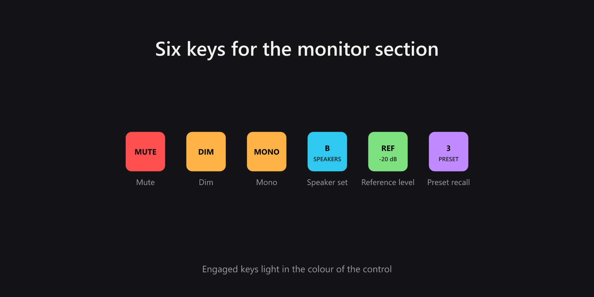
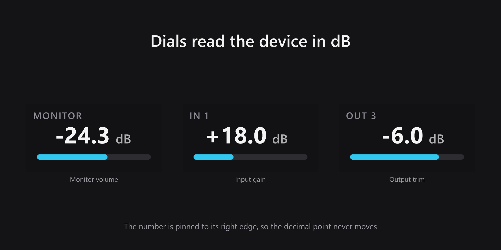
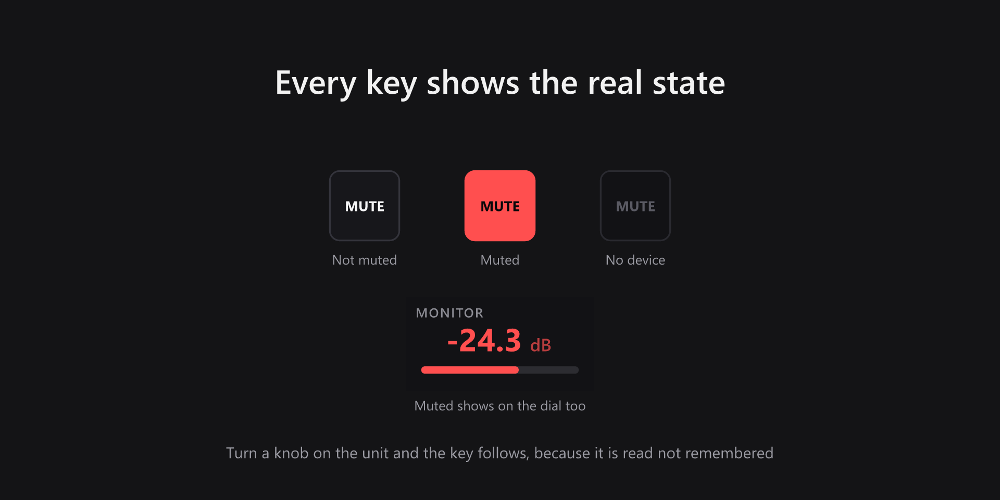
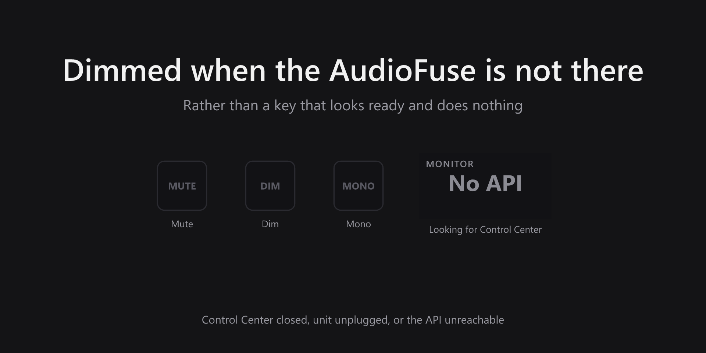

AudioFuse Control
Elgato Stream Deck plugin · Windows and macOS
Mute, dim, mono, speaker set A/B, reference level and preset recall for an Arturia AudioFuse, each on a key that shows what the device is actually doing rather than the last thing you pressed. Turn a knob on the unit and the key follows.
- State read from the device
- Monitor volume on a dial
- Input gain and output trim
- Speaker set switching
- Reference level recall
- Eight preset slots
- Keys dim when unreachable
- No driver, no MIDI mapping
What it looks like




How it talks to the unit
AudioFuse Control Center already exposes a local HTTP API, and that is what this plugin uses. There is no driver to install, no MIDI mapping to configure and no virtual audio device — it reads and writes the same state the Control Center window shows, so the two never disagree.
Because the state is read rather than tracked, anything that changes the device changes the keys: a knob on the front panel, a click in Control Center, or another Stream Deck. The dial readouts are pinned to their right edge so the decimal point stays still while you turn, and a muted output turns the readout red rather than hiding it.
What you need
- Operating system
- Windows 10 or later, or macOS 13 or later
- Stream Deck
- Stream Deck software 7.1 or later. Dials need a Stream Deck + or Stream Deck Studio; the keys work on any model.
- Hardware
- An Arturia AudioFuse 16Rig or AudioFuse Studio
- Software
- AudioFuse Control Center running, with its HTTP API reachable
Support
Bug reports and feature requests are best filed on GitHub, where they can be tracked against a release.